The Western Approach
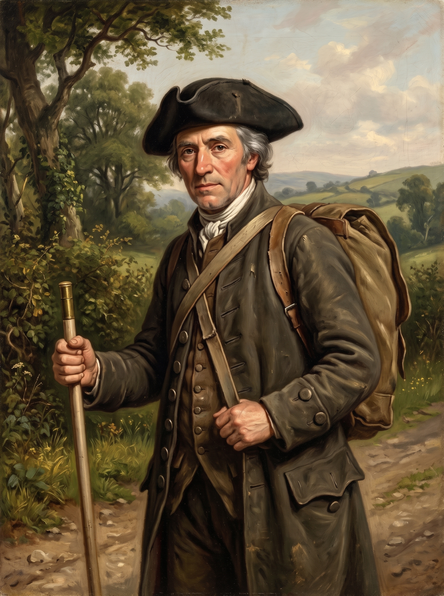
His name was Alexander Semple, though along the border valleys of Monmouthshire no one called him that. To the farm wives of Wentloog, the hostlers at the coaching gates, and the magistrates sitting in petty sessions, he was simply “the Scotchman.” Trade Classification An 18th-century commercial term across Britain for travelling tally-drapers selling cloth, linens, and haberdashery on scheduled credit circuits, regardless of actual nationality.
Semple was forty-two years old, hailing originally from the Upper Ward of Lanarkshire Scottish Lowlands The southern upland territory around Biggar and Lanark, a historic heartland for itinerant weavers, packmen, and linen merchants. . He had spent eighteen years living out of an oiled canvas pack strapped across his chest and shoulders, working a seasonal tallyman’s circuit through South Wales. His hair was iron-grey, his knees hardened by miles of sunken parish tracks, and his right hand rarely left his ellwand—a smoothed ash measuring rod, precisely forty-five inches long, banded with brass at either end. To the women at cottage doorways, it was the honest measure by which he cut lengths of Irish linen, cambric, and calico; to Semple, walking alone down solitary hollow-ways, it was a heavy defensive cudgel against highway footpads and farm mastiffs.
In the heat of late June 1750, Semple was finishing an eastward collection round. He had started the circuit over in the small market town of Cardiff, crossing the ancient border at the historic crossing of Rumney Bridge. Heading toward Newport, the main thoroughfare did not strike directly across the coastal plain; instead, it swung north in a wide, sweeping arc outward to Bassaleg, skirting well clear of the vast enclosed deer parks, boundary walls, and private home grounds of the Morgan family at Tredegar House. These rough, rutted parish tracks were completely open and toll-free, maintained only by the reluctant six-day labour of local farmers, though within the decade they would be seized by Parliament and gated as official turnpike roads1.
His canvas pack was noticeably lighter than when he had set out from Cardiff, containing little more than a few remaining pieces of figured ribbon, bone lace, bone buttons, and remnant handkerchiefs. But inside his buckskin breeches, tucked deep into a buttoned fob, was the real weight: sixteen pounds of shillings, half-crowns, and copper pence collected from tenant households across the parishes of Wentloog and Bassaleg.
Every yard of lane brought a prickle of caution. Only the previous winter, the taprooms in Bassaleg had been buzzing with the news of an assault on this very road: a clerk to Mr Peter Davies, the Newport attorney Plots 98 & 102 Peter Davies, prominent Newport attorney at law, holding tenements and legal offices documented on the 1750 plan. , had been brutally beaten in broad daylight by a local yeoman named Henry Thomas John, who had made off with the clerk’s five-shilling gun2. Semple had seen the wanted notice pinned up, warning travellers that the absconder wore a drab surtout and blue shag breeches and could speak not a single word of English2. A travelling dealer carrying hard silver coin down unlit lanes between Bassaleg and Newport was an infinitely richer prize than an attorney’s clerk.
Assault & Robbery on the Bassaleg Road
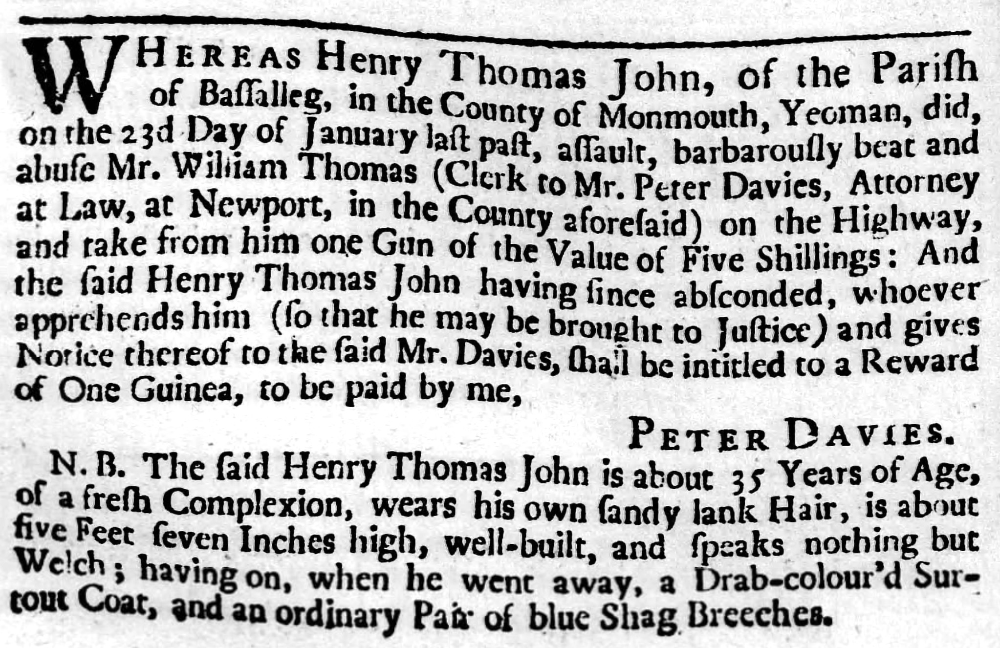
View Full Archival Transcript
“WHEREAS Henry Thomas John, of the Parish of Bassalleg, in the County of Monmouth, Yeoman, did, on the 23d Day of January last past, assault, barbarously beat and abuse Mr. William Thomas (Clerk to Mr. Peter Davies, Attorney at Law, at Newport, in the County aforesaid) on the Highway, and take from him one Gun of the Value of Five Shillings : And the said Henry Thomas John having since absconded, whoever apprehends him (so that he may be brought to Justice) and gives Notice thereof to the said Mr. Davies, shall be intitled to a Reward of One Guinea, to be paid by me, PETER DAVIES.2”
“N. B. The said Henry Thomas John is about 35 Years of Age, of a fresh Complexion, wears his own sandy lank Hair, is about five Feet seven Inches high, well-built, and speaks nothing but Welch; having on, when he went away, a Drab-colour’d Surtout Coat, and an ordinary Pair of blue Shag Breeches.2”
Over the Ridge to Stow Hill
Emerging from the wooded hollows of the parish road, Semple felt the slope stiffen as the track skirted along the southern edge of the ancient earthen ring of Tredegar Hill Fort, passing the quiet stone walls of Nant Coch Farm set back in its fields. At the crest of the hill, the lane met an open fork where a bleached timber guide-post pointed its carved hands along the split—one arm directing travellers down toward Bassaleg and the other toward Risca. It was the very marker post that would later give its name to the Handpost Inn, standing at a natural vantage where turnpike gates would soon be planted.
Historical Reconstruction • The Bassaleg Road
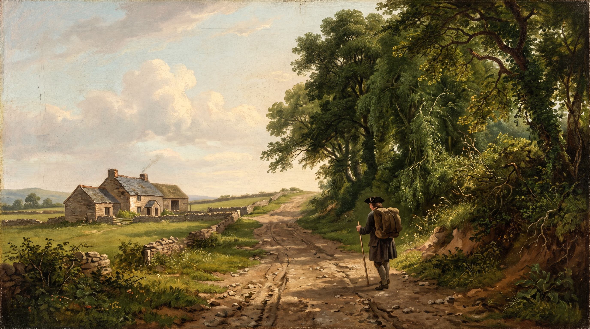
Following the crest of the lane along what is now Stow Hill, Semple walked across the open pasture historically set aside for the ancient Stow Fair. Held on the high ridge outside the borough liberties, the fair was a rough, rowdy seasonal gathering for horse-copers, drovers, and shearers—notorious across Monmouthshire for brawling and livestock theft.
By the roadside stood the modest stone front of the Bull Inn at Stow Stow Hill Hostelry An ancient wayside public house on Stow Hill; nineteenth-century notices show it long remained a staple drovers’ halt for grazing and stabling. . Long before nineteenth-century newspaper notices recorded its keeper John Adieu advertising stray and stolen horses left for grazing at eightpence a night4, the inn served travellers tackling the ridge, right where illicit horse-trading and the lively traffic of the fair met.
Horse Theft & Pasture at the Bull at Stow
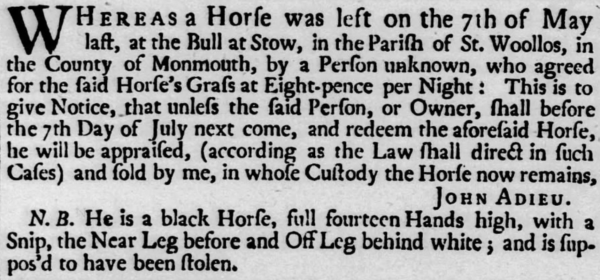
View Full Archival Transcript
“WHEREAS a Horse was left on the 7th of May last, at the Bull at Stow, in the Parish of St. Woollos, in the County of Monmouth, by a Person unknown, who agreed for the said Horse’s Grass at Eight-pence per Night : This is to give Notice, that unless the said Person, or Owner, shall before the 7th Day of July next come, and redeem the aforesaid Horse, he will be appraised, (according as the Law shall direct in such Cases) and sold by me, in whose Custody the Horse now remains, JOHN ADIEU.
N. B. He is a black Horse, full fourteen Hands high, with a Snip, the Near Leg before and Off Leg behind white ; and is suppos’d to have been stolen.”
Turning along the level ridge of Stow Hill, Semple saw the massive square stone tower of St Woolos Church rise against the sky. It was a venerable church with pre-Norman origins, standing solitary on the high rural skyline rather than hemmed in by city terraces. Here, on the outer borough bounds, sat the Stow Manor Pound for stray cattle along with the rectorial tithe barn. Passing the boundary markers into the borough proper, he began the descent down Stow Hill over loose red sandstone gravel.
On his left stood the modest stone almshouses (Plot 55), founded fifty years earlier by Roger Williams to shelter six poor women of the town. (Though rebuilt on this lower ground in 1845, the charity would eventually be moved and rebuilt further up the hill in 1901, where its Victorian brick successor still stands). Almost next door sat (Plot 57), a substantial holding leased by Thomas Dumayne, Esq. Mayor of Newport Chief magistrate 1750–1754; maltster and merchant occupying a substantial house, stable, 4,000-bushel malthouse, and an acre of orchard. , who was soon to serve as Mayor of Newport. Positioned high on the ridge with sweeping views across the levels to the Bristol Channel, the compound was both a genteel residence and a bustling industrial enterprise complete with its own brewhouse, granary, and stable. From the yard behind came the rich, roasted scent of sprouted grain from Dumayne’s commercial malthouse. Capable of wetting four thousand bushels a season—close to ninety tons of barley, sufficient to brew over forty thousand gallons of ale—this was no mere tavern brewhouse, but a wholesale manufacturing operation supplying alehouses across the borough and trading river ketches bound for Bristol.
Commercial Premises & Trade Tenancies
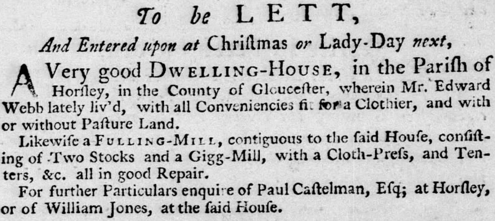
View Full Archival Transcript
“To be Lett, and Entered upon at May next, A very good commodious House, Situate in the Middle of the Town of Newport, in the County of Monmouth, and now rented by Thomas Dumayne, Eſq; Mayor of the ſaid Town; with a good Malt-Houſe thereto belonging, where may be made Yearly between 3 and 4000 Buſhels of Malt; together with a Stable, Garden, and an Orchard of about an Acre of Land, with all Manner of Fruit-Trees. For farther Particulars enquire of Charles Griffiths, of Laneravon, in the ſaid County, Gent.”
Further down on the right lay the Free-School-House (Plot 70) 69 Stow Hill Endowed in 1607 by Alderman William Williams. Later the borough workhouse (1783) and house of refuge; site now beneath a car park. . Through the low boundary hedge, Semple could see the well-tended garden, though the schoolroom itself was quiet3. The previous master had vacated his post two years earlier after gaining preferment at Oxford, and notices had circulated across the county seeking a gentleman skilled in Latin grammar and the classics to take the rent-free lodging3. Semple, whose father had drilled Latin syntax into him in a Lanark parish school, looked on the silent garden with a quiet nod before adjusting his shoulder straps.
Passing the broken, weather-beaten stone base of an ancient wayside preaching cross near the corner of modern Havelock Street, the steep decline finally began to level out as the buildings crowded in.
At the foot of the hill, commanding the road where Stow Hill emptied into the head of High Street, stood the ancient fortified West Gate Medieval Town Gate The medieval western stone gatehouse and gaol spanning the roadway between Stow Hill and High Street; demolished c. 1799 to clear traffic. . Surviving until the close of the century, its low stone archway formed the physical threshold of the borough's liberties, with upper chambers that had served generations as the town gaol. To Semple's left stood The Great House (Plot 42) Tredegar Town Mansion The urban residence of the Morgan family. Converted in the early 19th c. into the Tredegar Estate Offices, later Bailey & Co.'s Bank (now NatWest). —the imposing stone town mansion of the Morgans of Tredegar. Passing under the shadowy stone portal of the West Gate, Semple stepped abruptly out of the rural approach and directly into the noise and stench of the High Street.
The Clamour of High Street
The scent of roasting grain from Dumayne's malthouse gave way to the foul, damp reek of the town. High Street in 1750 was narrow, noisy, and utterly devoid of drainage. It was market day, and the thoroughfare was an obstacle course of open refuse gutters, domestic dunghills piled outside doorways, and livestock. Farmers had tethered sheep, pigs, and cattle to cellar posts and door rings, creating the very bottlenecks that would draw complaints for over a century until the roadway was finally widened. In the middle of the street stood the timber Market House, surrounded by butter-wives and produce sellers, while the borough bellman rang his brass handbell to cry mayoral bylaws, missing heifers, and the town's sporting bouts.
Before plunging deeper into the throng, Semple turned aside down narrow Skinner Street toward the riverfront (Plot 87). His canvas pack was nearly stripped bare, and the quayside end of the lane—backing directly onto the great Tredegar warehouse at the water's edge—was the domain of Mr Adam Barber Skinner Street Burgess Merchant holding Plot 87 near the river wharves; victim of a notable 1746 housebreaking involving valuable silver and imported cloth. . Semple called at the yard seeking word of fresh linen bales expected on the Bristol trows, but found the household still wary of visiting strangers. Barely three years earlier, Barber’s home had been broken into and stripped of silver buckles, new coat-buttons, and gold coin by a neighbourhood maidservant8. When the girl was apprehended, she was found with an astonishing hoard of stolen finery—gowns of lustrous blue paduasoy silk, a figured dimity petticoat boasting eleven breadths, and fine cambric aprons brought over the hills from Brecon by the Caerleon carrier8. Finding no wholesale trade to be done that morning, Semple retraced his steps up the lane, re-entering High Street where the market traffic was at its height.
Housebreaking & Luxury Textiles at Adam Barber’s
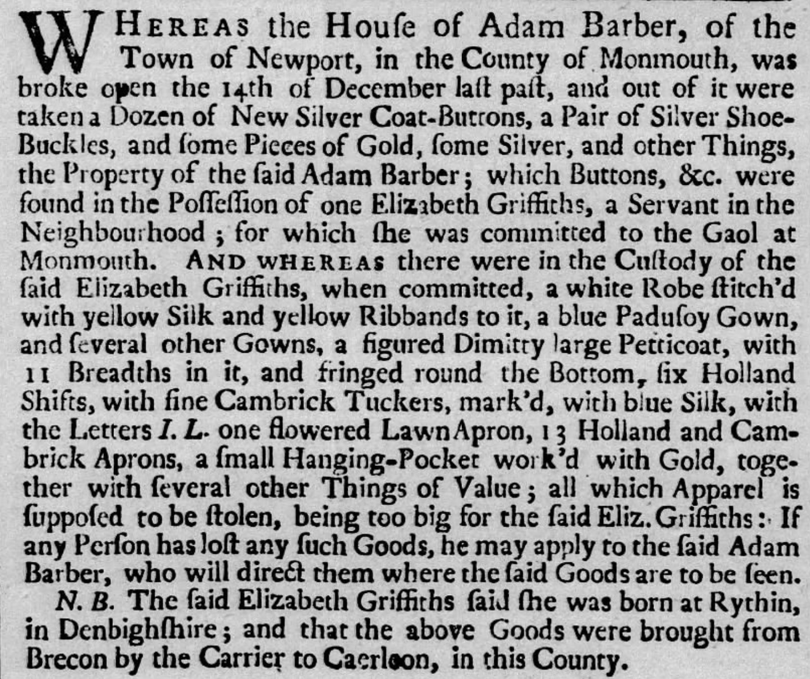
View Full Archival Transcript
“WHEREAS the House of Adam Barber, of the Town of Newport, in the County of Monmouth, was broke open the 14th of December last past, and out of it were taken a Dozen of New Silver Coat-Buttons, a Pair of Silver Shoe-Buckles, and some Pieces of Gold, some Silver, and other Things, the Property of the said Adam Barber; which Buttons, &c. were found in the Possession of one Elizabeth Griffiths, a Servant in the Neighbourhood; for which she was committed to the Gaol at Monmouth.
AND WHEREAS there were in the Custody of the said Elizabeth Griffiths, when committed, a white Robe stitch’d with yellow Silk and yellow Ribbands to it, a blue Padusoy Gown, and several other Gowns, a figured Dimitty large Petticoat, with 11 Breadths in it, and fringed round the Bottom, six Holland Shifts, with fine Cambrick Tuckers, mark’d, with blue Silk, with the Letters I. L. one flowered Lawn Apron, 13 Holland and Cambrick Aprons, a small Hanging-Pocket work’d with Gold, together with several other Things of Value; all which Apparel is supposed to be stolen, being too big for the said Eliz. Griffiths: If any Person has lost any such Goods, he may apply to the said Adam Barber, who will direct them where the said Goods are to be seen.
N. B. The said Elizabeth Griffiths said she was born at Rythin, in Denbighshire; and that the above Goods were brought from Brecon by the Carrier to Caerleon, in this County.”
Returning up Skinner Street into the High Street press, Semple passed the corner burgage of Elizabeth Nicholas (Plot 92) High Street Freeholder Occupied Plot 92 at the corner of Griffin Lane; a later 1754 notice highlights the risks of hitching valuable pack-horses outside street frontages. at the entrance to Griffin Lane. Outside dwellings like hers, country carriers and drovers routinely tethered their mounts to cellar posts and iron door rings while bargaining within. It was a risky convenience: only a few years later, Elizabeth would advertise a half-guinea reward for her own dark-grey pack mare, snatched saddle and bridle straight from her front door in broad daylight and trailed through an illicit horse-coping ring stretching all the way to Crickhowell and West Wales9. Seeing several weary nags hitched unattended along the causeway, Semple kept a tight grip on his ellwand and pack straps as he moved through the throng.
Horse Theft at the Door of Elizabeth Nicholas
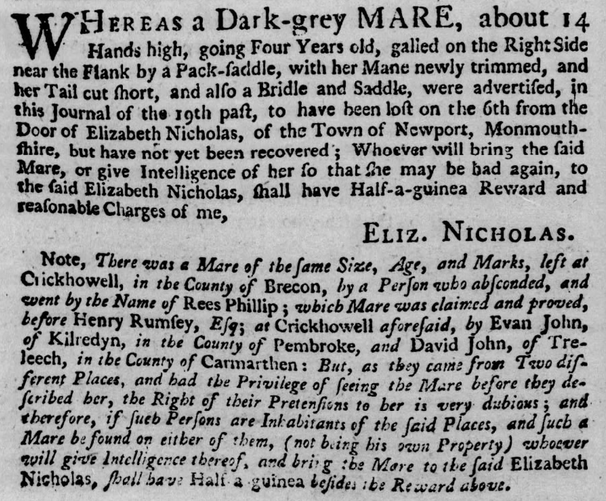
View Full Archival Transcript
“WHEREAS a Dark-grey MARE, about 14 Hands high, going Four Years old, galled on the Right Side near the Flank by a Pack-saddle, with her Mane newly trimmed, and her Tail cut short, and also a Bridle and Saddle, were advertised, in this Journal of the 19th past, to have been lost on the 6th from the Door of Elizabeth Nicholas, of the Town of Newport, Monmouthshire, but have not yet been recovered; Whoever will bring the said Mare, or give Intelligence of her so that she may be had again, to the said Elizabeth Nicholas, shall have Half-a-guinea Reward and reasonable Charges of me, ELIZ. NICHOLAS.
Note, There was a Mare of the same Size, Age, and Marks, left at Crickhowell, in the County of Brecon, by a Person who absconded, and went by the Name of Rees Phillip; which Mare was claimed and proved, before Henry Rumsey, Esq; at Crickhowell aforesaid, by Evan John, of Kilredyn, in the County of Pembroke, and David John, of Treleech, in the County of Carmarthen: But, as they came from Two different Places, and had the Privilege of seeing the Mare before they described her, the Right of their Pretensions to her is very dubious; and therefore, if such Persons are Inhabitants of the said Places, and such a Mare be found on either of them, (not being his own Property) whoever will give Intelligence thereof, and bring the Mare to the said Elizabeth Nicholas, shall have Half a guinea besides the Reward above.”
Semple pushed past the shouting crowds, taking his pack down the street to hawk his wares. He passed the Fleur de Luce (Plot 36) Ye Olde Murenger Ye Olde Murenger House is a 19th-century pub with a mock Tudor front. It is named after the medieval job of a murenger but it is believed the house of the murenger was further down the street. , and made for The Red Cow (Plot X) The Greyhound Hotel Licensed alehouse of the Widow Hughes. Nos. 48–49 High Street preserve this modest pre-industrial three-storey scale. , run by the Widow Hughes. Occupying the site of today's Greyhound at Nos. 48–49 High Street, this was an unpretentious, three-storey vernacular alehouse. Its low-ceilinged rooms and narrow burgage shell—which may well survive within the core of those very buildings today—were far more welcoming to a Scotchman's purse. Here, for a few coppers, he could get a bowl of hot pottage and a secure corner to rest his pack.
Just up the street at (Plot 108), the town's premier Tredegar-owned coaching inn was overflowing due to a massive four-day cockfighting tournament between the Gentlemen of Monmouthshire and the Gentlemen of Glamorganshire5. Thirty-one cocks a side were fighting in the Main for three guineas a battle, with a staggering sixty guineas riding on the deciding match5. For an ordinary working man or labourer earning five or six shillings a week, sixty guineas was a small fortune—more than four years of back-breaking manual labour wagered on the clash of feathered spurs5.
A Cock-Match at The King’s Head
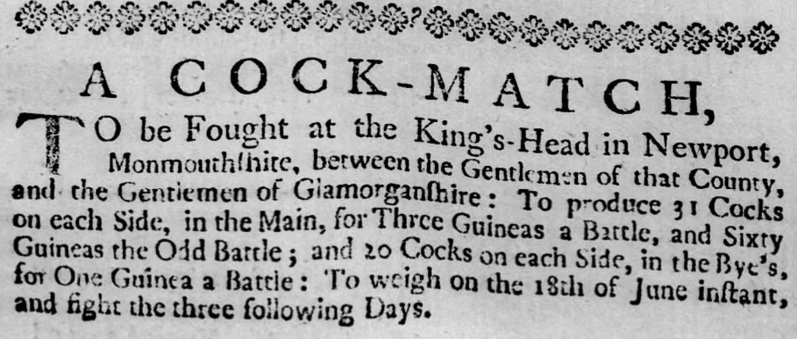
View Full Archival Transcript
“A COCK-MATCH, TO be Fought at the King’s-Head in Newport, Monmouthshire, between the Gentlemen of that County, and the Gentlemen of Glamorganshire : To produce 31 Cocks on each Side, in the Main, for Three Guineas a Battle, and Sixty Guineas the Odd Battle ; and 20 Cocks on each Side, in the Bye’s, for One Guinea a Battle : To weigh on the 18th of June instant, and fight the three following Days.”5
Historical Reconstruction • The King’s Head & High Street Market
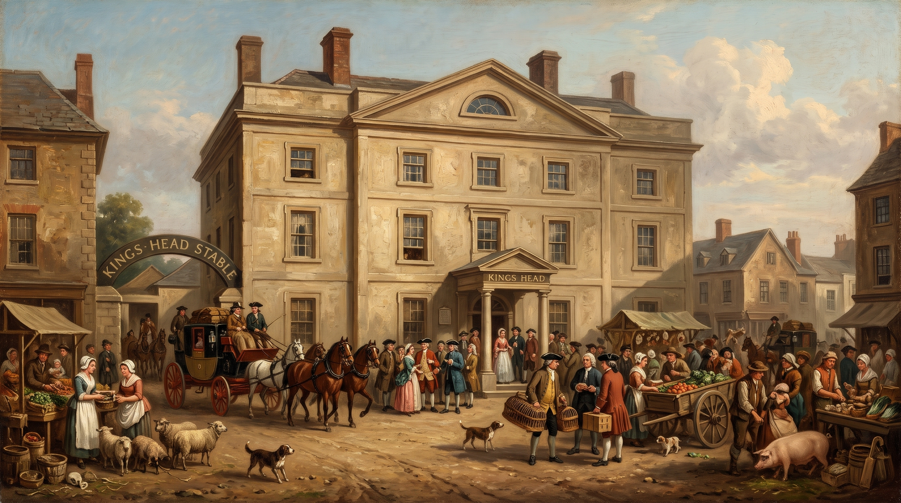
Diverting from the Bridge: The Castle to Crindau
Leaving the noisy crowd outside the King's Head behind, Semple continued down the slope toward the river quarter. Further along the eastern frontage sat the legal chambers of Thomas Phillips, Gent. (Plot 81) Attorney & Turnpike Clerk Confidential agent to the Tredegar estate; later appointed Clerk to the Trustees of the Newport Turnpike District. . As confidential solicitor to the Morgans of Tredegar, Phillips was one of the borough’s crucial legal fixers, overseeing the complex network of manorial tenancies, timber rights, and ninety-nine-year leases that governed town property. Semple had no dealings with attorneys, but within the decade Phillips would hold direct authority over the chapman’s very living: following the First Monmouthshire Turnpike Act of 1758, it was Phillips who would summon county magistrates to the King’s Head as Clerk to the Newport-Pike Trustees, drafting the orders to erect toll bars and gate the open parish tracks Semple had walked that morning10.
The Newport-Pike Trust at The King’s Head
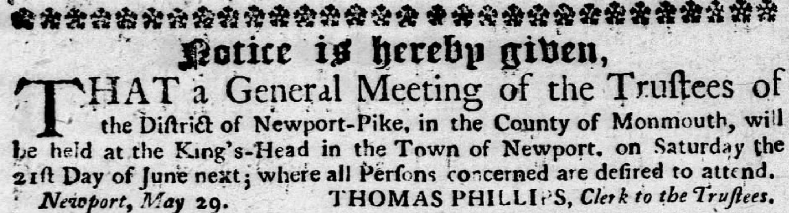
View Full Archival Transcript
“Notice is hereby given, THAT a General Meeting of the Trustees of the District of Newport-Pike, in the County of Monmouth, will be held at the King’s-Head in the Town of Newport, on Saturday the 21st Day of June next ; where all Persons concerned are desired to attend.
Newport, May 29. THOMAS PHILLIPS, Clerk to the Trustees.”
By mid-afternoon, Semple was approaching the lower end of the thoroughfare where the roadway funnelled between the Castle walls and the river. Here, fronting the northern entrance to town opposite Castle Green, stood the substantial urban holding of Charles Van, Esq. (Plot 5) Llanwern Gentry Town holding of Charles Van of Llanwern House; county magistrate, sportsman, and MP who kept kennels on the Castle approach. . While Semple kept a tight grip on his ellwand against fierce farm curs, the kennels behind Van’s town house sheltered beasts of a far gentler, aristocratic breed. An avid field sportsman, Van’s gun dogs were the pride of the county—though not safe from town dog-thieves, who would later spirit away his liver-eared pointer Sappho and spaniels Rover and Phillis, provoking a furious two-guinea reward for their return11.
Stolen Sporting Dogs of Charles Van, Esq.
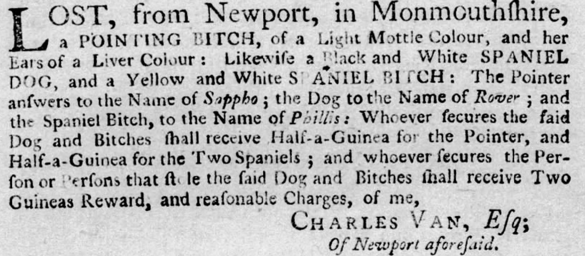
View Full Archival Transcript
“LOST, from Newport, in Monmouthshire, a POINTING BITCH, of a Light Mottle Colour, and her Ears of a Liver Colour : Likewise a Black and White SPANIEL DOG, and a Yellow and White SPANIEL BITCH : The Pointer answers to the Name of Sappho; the Dog to the Name of Rover; and the Spaniel Bitch, to the Name of Phillis: Whoever secures the said Dog and Bitches shall receive Half-a-Guinea for the Pointer, and Half-a-Guinea for the Two Spaniels ; and whoever secures the Person or Persons that stole the said Dog and Bitches shall receive Two Guineas Reward, and reasonable Charges, of me, CHARLES VAN, Esq; Of Newport aforesaid.”
Just across the roadway where the ground dipped toward the river approach—known in later decades as “The Dip”—stood the corner plot (Plot 110), containing the convenient house and shop belonging to Mr John Thomas, advertised to let that year along with twelve acres of prime grazing meadow on the levels6.
A Convenient House and Shop with Meadow-Ground
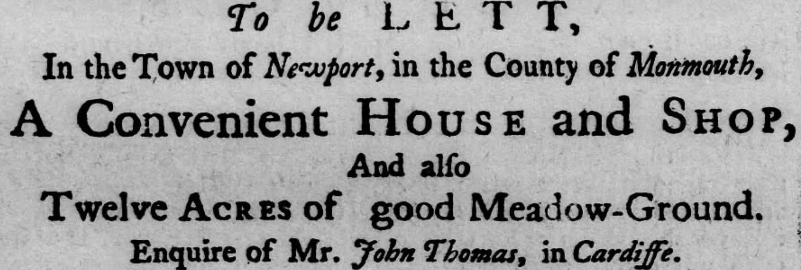
View Full Archival Transcript
The obvious post-road to Caerleon crossed the wooden bridge, but taking it meant tackling the brutal, exhausting climb straight up the sheer flank of Christchurch Hill. For a foot-pedlar carrying a heavy pack and pocketfuls of coin, Semple preferred a flatter northern detour, even though it meant skirting the fortified northern edge of town.
Turning sharp left away from the bridge into narrow Thomas Street Birthplace of John Frost A narrow back lane running behind High Street tenements to Mill Street. The Chartist leader John Frost was born here at the Royal Oak in 1784. , Semple skirted behind the rear burgages toward the river mill. Along this quiet back lane sat Plot 28 Thomas Street Workshop Premises of John Frost, master shoemaker; grandfather of the 1839 Chartist leader. , the dwelling and workshop of the cordwainer John Frost Master Cordwainer Documented 1750 burgage holder; placed notices in 1756 seeking an absconded apprentice clad in homespun woollens. . Thirty-four years before his grandson and namesake was born on this same street at the Royal Oak—destined to lead thousands of armed Chartists down the town’s main thoroughfare—the elder Frost was busy crafting stout leather boots for drovers and farmers. His workshop had its trials: only a few years later, Frost would advertise in the county papers for his runaway seventeen-year-old apprentice, John Williams, who had vanished without warning dressed head-to-toe in coarse brown homespun cloth12. For an itinerant packman carrying yards of smooth factory linen and finished Manchester haberdashery, the rough country homespun of a runaway apprentice was a familiar reminder of the everyday working cloth of the border valleys.
Runaway Apprentice of John Frost, Shoemaker
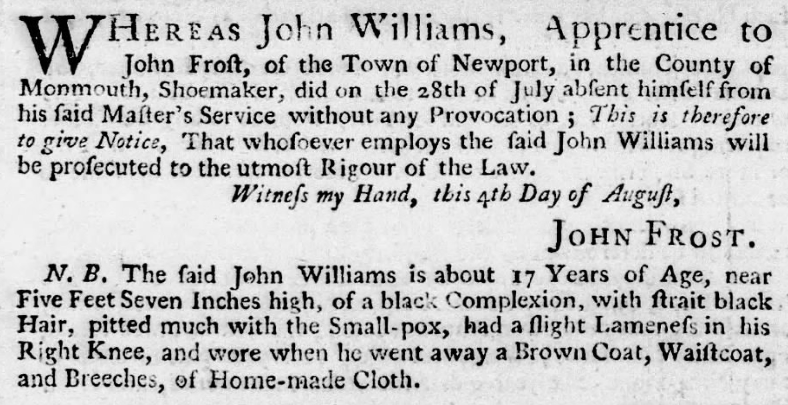
View Full Archival Transcript
“WHEREAS John Williams, Apprentice to John Frost, of the Town of Newport, in the County of Monmouth, Shoemaker, did on the 28th of July absent himself from his said Master’s Service without any Provocation ; This is therefore to give Notice, That whosoever employs the said John Williams will be prosecuted to the utmost Rigour of the Law.
Witness my Hand, this 4th Day of August, JOHN FROST.
N. B. The said John Williams is about 17 Years of Age, near Five Feet Seven Inches high, of a black Complexion, with strait black Hair, pitted much with the Small-pox, had a slight Lameness in his Right Knee, and wore when he went away a Brown Coat, Waistcoat, and Breeches, of Home-made Cloth.”
Following the track down to Mill Street, Semple arrived tucked directly beneath the towers of the semi-ruinous medieval castle, where the tidal town mill churned steadily in its millpond. Beyond the mill, the town ended. Passing through the Marshes Gate—the northern borough toll boundary where a checkpoint would later stand—Semple stepped out onto Marshes Road, following what is now the modern Malpas Road corridor.
In 1750, this was an unpaved, desolate track cutting across open tidal flats. To his left, the road hugged the natural contour of the land just below the slopes of present-day Brynglas, keeping to firmer ground while the sodden, reed-choked marshes and the winding Malpas Brook lay out to his right. Up ahead, perched safely on a slight rise above the marshline, stood Crindau House Circa 1318 Manor Ancient stone manor house preserving 14th-century fabric, historically safe from the tidal surge of the Usk levels. , an ancient stone manor house with origins stretching back to the early 14th century, keeping watch over the low meadows.
Malpas House to Caerleon
Beyond Crindau, the lower tracks were notoriously boggy, saturated whenever spring tides pushed up the river. Semple took the older, higher alignment of the road, climbing gradually along the bank to avoid having his boots sucked into the clay.
Historical Reconstruction • The Old Malpas Road
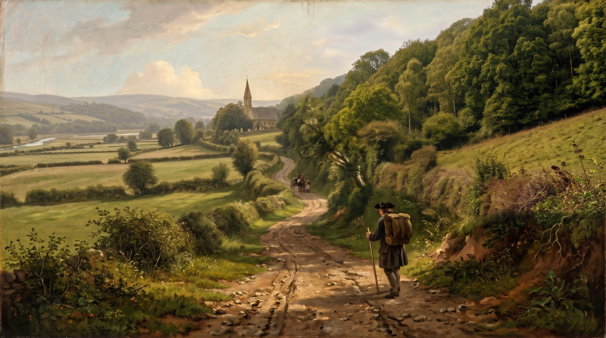
The track brought him into the quiet parish of Malpas. St Mary’s Church stood on its knoll, a small, venerable stone chapel preserving the round arches of its original 12th-century Cluniac priory cell, long before Victorian restorers swept the medieval fabric away to rebuild it in the 1840s.
A short distance past the church lay Malpas House, a quiet gentry seat. Semple continued past the turning to call at the estate’s kitchen quarters, successfully bargaining away his last lengths of ribbon and sewing thread to the domestic maids, before doubling back to the junction. (The Three Horseshoes pub would later serve travellers at this exact crossing).
Semple turned eastward onto the track known today as Pilmawr Road. This was ancient ground: an elevated ridgeway alignment dating back to Roman legionary patrols moving between Caerleon and western forts. The road plunged down toward Park-y-Pill (later called Malpas Pill), a tidal creek off the Usk where small coastal vessels had long been built and repaired, before climbing again along the higher contour above the river loops.
As dusk settled, the roofs of Caerleon appeared below. Descending into the ancient borough, Semple bypassed the timber bridge and headed for the warmth of the town's oldest quayside alehouses. Whether bedding down under the timber rafters of the Hanbury Arms or the Olde Bull Historic Riverfront Inns The Olde Bull (advertised by 1730) and the Hanbury Arms (incorporating ancient tower fabric) catered to river pilots, masters, and carters. —which had already been quenching the thirst of river pilots and carters for decades—he could finally slide the heavy pack from his shoulders, unbuckle his coin purse, and rest his ellwand against the hearth.
Plan of the Town and Borough of Newport (c. 1750)
Pre-zoomed on the borough core. Drag to explore or use area presets.
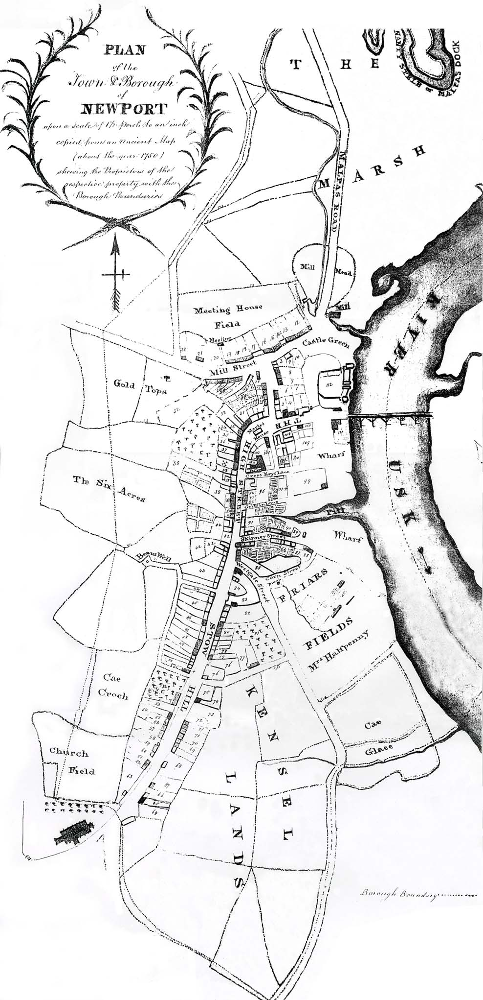
“PLAN of the Town & Borough of NEWPORT upon a Scale of 100 Perch to an Inch / Copied from an Ancient Map (about the year 1750) shewing the Proprietors of the respective property with the Borough Boundaries.”7